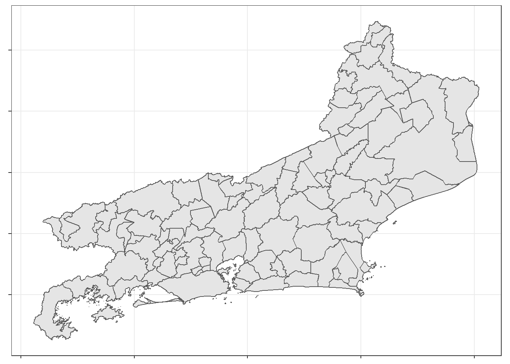
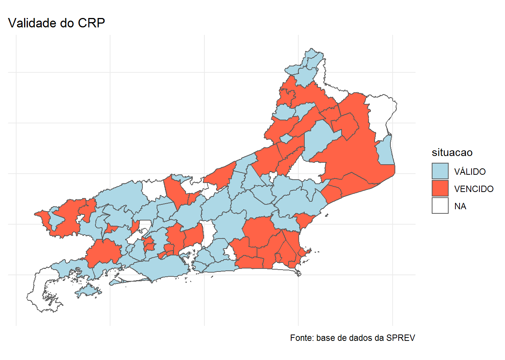

Capítulo 3 CRP - Certificado de Regularidade Previdenciária
Este capítulo objetiva mostrar algumas possibilidades de análise dos dados do CRP
A primeira coisa a ser feita, como sempre, é realizar a importação e o pré-processamento dos dados:
crp <- read_excel("dados/5-validade-crp_atualizacao_de_ago_set_2020_extracao_em_2020-10-06t18_25_59.xlsx")
head(crp)# A tibble: 6 x 8
UF ENTE `NR CRP` `DATA DE EMISSÃO` `DATA DE VALIDADE` `CRP JUDICIAL` `TIPO DE REGIME` `SITUAÇÃO DO CRP`
<chr> <chr> <chr> <chr> <chr> <chr> <chr> <chr>
1 AC Acrelândia 980643-185126 17/04/2020 14/10/2020 NÃO RGPS VÁLIDO
2 AC Assis Brasil 980157-186981 24/06/2020 21/12/2020 NÃO RGPS VÁLIDO
3 AC Brasiléia 980105-185377 28/04/2020 25/10/2020 NÃO RGPS VÁLIDO
4 AC Bujari 980645-188197 15/08/2020 11/02/2021 NÃO RGPS VÁLIDO
5 AC Capixaba 980647-188445 19/08/2020 15/02/2021 NÃO RGPS VÁLIDO
6 AC Cruzeiro do Sul 980107-187340 07/07/2020 03/01/2021 NÃO RGPS VÁLIDO O conjunto de dados contempla tanto os entes vinculados ao RGPS quanto ao RPPS e fornece algumas informações sobre o CRP.
Para facilitar a análise posterior dos dados as colunas serão renomeadas e as variáveis indicativas de datas serão convertidas para um formato de data.
# Alterar nomes das variáveis
crp <- crp %>%
rename(uf = UF,
ente = ENTE,
num_crp = `NR CRP`,
dt_emissao = `DATA DE EMISSÃO`,
dt_validade = `DATA DE VALIDADE`,
judicial = `CRP JUDICIAL`,
tipo_regime = `TIPO DE REGIME`,
situacao = `SITUAÇÃO DO CRP`)
# Converter datas para o formato de datas
crp <- crp %>%
mutate(dt_emissao = dmy(dt_emissao),
dt_validade = dmy(dt_validade))
head(crp)# A tibble: 6 x 8
uf ente num_crp dt_emissao dt_validade judicial tipo_regime situacao
<chr> <chr> <chr> <date> <date> <chr> <chr> <chr>
1 AC Acrelândia 980643-185126 2020-04-17 2020-10-14 NÃO RGPS VÁLIDO
2 AC Assis Brasil 980157-186981 2020-06-24 2020-12-21 NÃO RGPS VÁLIDO
3 AC Brasiléia 980105-185377 2020-04-28 2020-10-25 NÃO RGPS VÁLIDO
4 AC Bujari 980645-188197 2020-08-15 2021-02-11 NÃO RGPS VÁLIDO
5 AC Capixaba 980647-188445 2020-08-19 2021-02-15 NÃO RGPS VÁLIDO
6 AC Cruzeiro do Sul 980107-187340 2020-07-07 2021-01-03 NÃO RGPS VÁLIDO Como é possível verificar, a base de dados possui 8 variáveis. Embora os nomes das varáveis dêem uma boa indicação de seu conteúdo apresenta-se, a seguir, a descrição do conteúdo de cada coluna.
| variável | descrição |
|---|---|
| uf | sigla da unidade da federação na qual o RPPS está localizado |
| ente | nome do Ente (Estados, Municipios ou Distrito Federal) |
| num_crp | número do CRP |
| dt_emissao | data de emissão do CRP |
| dt_validade | data de validade do CRP (o CRP tem validade de 6 meses a partir de sua emissão) |
| judicial | indica se o CRP foi obtido por via judicial - SIM, NÂO |
| tipo_regime | tipo de regime previdenciário ao qual o Ente está vinculado - RGPS ou RPPS |
| situacao | situação do CRP - VÁLIDO ou VENCIDO |
Com essa base de dados é possível identificar a situação do Ente com relação à validade do CRP e também calcular algumas estatísticas.
3.1 Análise exploratória preliminar
Pode-se começar por verificar quais valores as variáveis judicial, tipo_regime e situacao podem assumir.
$tipo_regime
[1] "RGPS" "RPPS" "RPPS em extincao"
$situacao
[1] "VÁLIDO" "VENCIDO"
$judicial
[1] "NÃO" "SIM"A saída indica os possíveis valores de cada uma das três variáveis.
Um ponto importante é que a classificação do CRP em VÁLIDO ou VENCIDO é feita tomando-se como referência a data de extração dos dados no sistema CADPREV. Os dados do CRP ora em análise foi extraído em 2020-10-06 conforme indicado no nome do arquivo. Assim, se a data de validade do CRP é posterior ou igual a essa data, ele é classificado como VÁLIDO caso contrário como VENCIDO.
No Capítulo 1 foi apresentado o quantitativo dos Entes vinculados ao RGPS e ao RPPS. Talvez seja interessante verificar se, proporcionalmente, tem-se mais CRP vencidos no RGPS ou no RPPS.
Antes de prosseguir, vale a pena verificar a distribuição dos Entes entre os regimes e comparar com o que foi obtido no Capítulo 1:
tipo_regime | n | % |
RGPS | 3.418 | 61,13 |
RPPS | 2.152 | 38,49 |
RPPS em extincao | 21 | 0,38 |
Neste arquivo, tem-se 3.418 Entes vinculados ao RGPS o que confere com o valor obtido no Capítulo 1, Mas o quantitativo de Entes vinculados ao RPPS diverge um pouco: 2.152 contra 2.156 do Capítulo 1. Tem-se aqui 4 RPPS a menos. O quantitativo de RPPS em extinção também confere.
A seguir calcula-se o quantitativo de entes vinculados a cada regime (n), a quantidade de entes com CRP vencido em cada regime (n_vencido) e o percentual (%_vencido):
crp %>%
group_by(tipo_regime) %>%
summarise(n = n(),
n_vencido = sum(ifelse(situacao == "VENCIDO", 1, 0)),
`%_vencido` = round( n_vencido / n * 100, 2)) %>%
qflextable()tipo_regime | n | n_vencido | %_vencido |
RGPS | 3.418 | 726 | 21 |
RPPS | 2.152 | 663 | 31 |
RPPS em extincao | 21 | 7 | 33 |
O resultado indica que o percentual de entes com CRP vencido é elevado em ambos os regimes, mas o maior percentual está no RPPS (30,81%).
Uma checagem sempre oportuna é verificar se não existe duplicidade de CRP:
[1] FALSEO resultado indica não existir CRP duplicado na base. Em extrações mais antigas desta base de dados essa situação ocorria.
Uma coisa que se sabe em relação a esta base de dados é que, se a data de validade do CRP coincide com a data de extração dos dados, o CRP é considerado vencido o que não é correto. A conferência pode ser feita da seguinte forma:
# A tibble: 0 x 8
# ... with 8 variables: uf <chr>, ente <chr>, num_crp <chr>, dt_emissao <date>, dt_validade <date>, judicial <chr>, tipo_regime <chr>, situacao <chr>Nenhuma data de validade coincidiu com a data de extração da base de dados que, como já mencionado acima, deu-se em 06/10/2020.
3.2 Análise restrita aos RPPS
Nesta seção as análises serão restritas aos RPPS ativos, sendo então necessário excluir da base de dados os registros relativos ao RGPS e aos RPPS em extinção.
Agora é possível responder a algumas questões: por exemplo: quantos entes com CRP vencido existe em cada UF? Quanto esse quantitativo representa do total de RPPS existentes na UF?
crp_rpps %>%
group_by(uf) %>%
summarise(n_rpps = n(),
n_crp_vencido = sum(situacao == "VENCIDO"),
`%_crp_vencido` = round(n_crp_vencido / n_rpps * 100, 2)) %>%
arrange(desc(`%_crp_vencido`)) %>%
qflextable()uf | n_rpps | n_crp_vencido | %_crp_vencido |
PA | 28 | 17 | 61 |
RN | 41 | 22 | 54 |
AL | 74 | 39 | 53 |
RR | 2 | 1 | 50 |
BA | 38 | 18 | 47 |
GO | 171 | 81 | 47 |
RJ | 79 | 37 | 47 |
TO | 30 | 12 | 40 |
PI | 71 | 28 | 39 |
MG | 221 | 84 | 38 |
MA | 47 | 16 | 34 |
PB | 71 | 24 | 34 |
SP | 222 | 73 | 33 |
CE | 65 | 19 | 29 |
AP | 4 | 1 | 25 |
PR | 179 | 41 | 23 |
AM | 27 | 6 | 22 |
PE | 149 | 33 | 22 |
MT | 107 | 23 | 22 |
MS | 52 | 11 | 21 |
RS | 332 | 57 | 17 |
ES | 35 | 6 | 17 |
SC | 70 | 10 | 14 |
RO | 30 | 4 | 13 |
AC | 2 | 0 | 0 |
DF | 1 | 0 | 0 |
SE | 4 | 0 | 0 |
Em boa parte dos estados tem-se um elevado percentual de entes com o CRP vencido.
Também poderíamos incluir na tabela acima a quantidade de entes com CRP obtido pela via judicial e qual o percentual em relação ao total de entes na UF.
crp_rpps %>%
group_by(uf) %>%
summarise(n_rpps = n(),
n_crp_vencido = sum(situacao == "VENCIDO"),
`%_crp_vencido` = round(n_crp_vencido / n_rpps * 100, 2),
n_crp_judicial = sum(judicial == "SIM"),
`%_crp_judicial` = round(n_crp_judicial / n_rpps * 100, 2)) %>%
arrange(desc(`%_crp_judicial`)) %>%
qflextable()uf | n_rpps | n_crp_vencido | %_crp_vencido | n_crp_judicial | %_crp_judicial |
DF | 1 | 0 | 0 | 1 | 100,0 |
SE | 4 | 0 | 0 | 4 | 100,0 |
AM | 27 | 6 | 22 | 23 | 85,2 |
MA | 47 | 16 | 34 | 39 | 83,0 |
PE | 149 | 33 | 22 | 120 | 80,5 |
AP | 4 | 1 | 25 | 3 | 75,0 |
PB | 71 | 24 | 34 | 48 | 67,6 |
BA | 38 | 18 | 47 | 24 | 63,2 |
AL | 74 | 39 | 53 | 43 | 58,1 |
CE | 65 | 19 | 29 | 36 | 55,4 |
AC | 2 | 0 | 0 | 1 | 50,0 |
RR | 2 | 1 | 50 | 1 | 50,0 |
RO | 30 | 4 | 13 | 11 | 36,7 |
PA | 28 | 17 | 61 | 10 | 35,7 |
RJ | 79 | 37 | 47 | 24 | 30,4 |
RN | 41 | 22 | 54 | 12 | 29,3 |
MG | 221 | 84 | 38 | 53 | 24,0 |
PI | 71 | 28 | 39 | 16 | 22,5 |
GO | 171 | 81 | 47 | 35 | 20,5 |
SP | 222 | 73 | 33 | 41 | 18,5 |
MS | 52 | 11 | 21 | 9 | 17,3 |
ES | 35 | 6 | 17 | 6 | 17,1 |
TO | 30 | 12 | 40 | 4 | 13,3 |
SC | 70 | 10 | 14 | 9 | 12,9 |
PR | 179 | 41 | 23 | 21 | 11,7 |
RS | 332 | 57 | 17 | 37 | 11,1 |
MT | 107 | 23 | 22 | 4 | 3,7 |
Na tabela acima apresenta-se apenas um resumo quantitativo mostrando a quantidade de entes com CRP vencido e judicial.
Caso haja a necessidade de identificar os Entes em uma Unidade da Federação com o CRP vencido ou com CRP judicial, basta aplicar um filtro. Exemplo: RPPS do ERJ com CRP vencido:
crp_rpps %>%
filter(uf == "RJ", situacao == "VENCIDO") %>%
select(ente, num_crp, dt_emissao, dt_validade) %>%
arrange(desc(dt_validade)) %>%
qflextable()ente | num_crp | dt_emissao | dt_validade |
Resende | 985883-184152 | 2020-03-29 | 2020-09-25 |
Cantagalo | 985821-184096 | 2020-03-24 | 2020-09-20 |
Cardoso Moreira | 982915-184095 | 2020-03-24 | 2020-09-20 |
Governo do Estado do Rio de Janeiro | 953001-183938 | 2020-03-16 | 2020-09-12 |
São Pedro da Aldeia | 985903-183455 | 2020-02-28 | 2020-08-26 |
Pinheiral | 980778-182628 | 2020-01-30 | 2020-07-28 |
Cabo Frio | 985813-181873 | 2019-12-27 | 2020-06-24 |
Rio das Ostras | 982921-181607 | 2019-12-16 | 2020-06-13 |
Quissamã | 986007-180222 | 2019-10-25 | 2020-04-22 |
Saquarema | 985909-179861 | 2019-10-15 | 2020-04-12 |
Campos dos Goytacazes | 985819-179807 | 2019-10-09 | 2020-04-06 |
São João de Meriti | 985901-173895 | 2019-03-28 | 2019-09-24 |
Sapucaia | 985907-172358 | 2019-01-30 | 2019-07-29 |
Rio Claro | 985887-171829 | 2019-01-07 | 2019-07-06 |
Carapebus | 980772-167992 | 2018-08-28 | 2019-02-24 |
Areal | 982925-167136 | 2018-07-25 | 2019-01-21 |
Silva Jardim | 985911-151596 | 2017-03-20 | 2017-09-16 |
Italva | 985929-148284 | 2016-11-03 | 2017-05-02 |
Santo Antônio de Pádua | 985893-146812 | 2016-09-19 | 2017-03-18 |
Queimados | 982911-143579 | 2016-07-26 | 2017-01-22 |
Paraíba do Sul | 985873-138490 | 2016-01-13 | 2016-07-11 |
Duque de Caxias | 985833-138140 | 2015-12-30 | 2016-06-27 |
Mendes | 985855-135974 | 2015-10-21 | 2016-04-18 |
Laje do Muriaé | 985845-134921 | 2015-09-10 | 2016-03-08 |
Armação dos Búzios | 980770-134445 | 2015-08-22 | 2016-02-18 |
Mesquita | 981116-133965 | 2015-07-28 | 2016-01-24 |
São Sebastião do Alto | 985905-133815 | 2015-07-20 | 2016-01-16 |
Japeri | 982913-130551 | 2015-03-30 | 2015-09-26 |
Cambuci | 985817-129368 | 2015-02-09 | 2015-08-08 |
Quatis | 982923-125256 | 2014-08-25 | 2015-02-21 |
Itaperuna | 985843-124648 | 2014-07-28 | 2015-01-24 |
Rio Bonito | 985885-117820 | 2013-11-05 | 2014-05-04 |
Belford Roxo | 982909-99748 | 2011-09-27 | 2012-03-25 |
Itaocara | 985841-88200 | 2010-07-28 | 2011-01-24 |
Iguaba Grande | 980774-47771 | 2007-05-18 | 2007-11-14 |
Magé | 985849-30352 | 2005-03-02 | 2005-05-01 |
Araruama | 985803-28572 | 2004-12-23 | 2005-02-21 |
Outro exemplo: RPPS do ERJ com CRP válido mas judicial:
crp_rpps %>%
filter(uf == "RJ", judicial == "SIM", situacao == "VÁLIDO") %>%
select(ente, num_crp, dt_emissao, dt_validade) %>%
arrange(desc(dt_validade)) %>%
qflextable()ente | num_crp | dt_emissao | dt_validade |
Teresópolis | 985915-189024 | 2020-09-11 | 2021-03-10 |
Miracema | 985859-188827 | 2020-09-02 | 2021-03-01 |
Angra dos Reis | 985801-188695 | 2020-08-30 | 2021-02-26 |
São Gonçalo | 985897-188148 | 2020-08-12 | 2021-02-08 |
Itaguaí | 985839-187743 | 2020-07-29 | 2021-01-25 |
Rio de Janeiro | 986001-187398 | 2020-07-09 | 2021-01-05 |
Aperibé | 982919-187295 | 2020-07-07 | 2021-01-03 |
Nilópolis | 985863-186855 | 2020-06-18 | 2020-12-15 |
Volta Redonda | 985925-186497 | 2020-06-06 | 2020-12-03 |
Barra Mansa | 985807-186110 | 2020-05-26 | 2020-11-22 |
Seropédica | 980786-186140 | 2020-05-26 | 2020-11-22 |
Barra do Piraí | 985805-185508 | 2020-05-03 | 2020-10-30 |
Itaboraí | 985837-185370 | 2020-04-28 | 2020-10-25 |
São Fidélis | 985895-185382 | 2020-04-28 | 2020-10-25 |
Cachoeiras de Macacu | 985815-185169 | 2020-04-19 | 2020-10-16 |
Mangaratiba | 985851-185064 | 2020-04-15 | 2020-10-12 |
Para fechar esta seção, pode-se verificar se existe alguma relação entre as variáveis situacao e judicial. Sendo estas variáveis qualitativas uma tabela de contingência pode ajudar nessa investigação:
situacao
judicial VÁLIDO VENCIDO
NÃO 970 547
SIM 519 116
Para visualizar a tabela de contingência elaborada acima, apresenta-se um gráfico de mosaico, que confirma que a judicialização é uma boa estratégia para evitar o CRP vencido.
A proporção de CRP vencidos (em verde) é maior (praticamente o dobro) entre os não judicializados que nos judicializados.
3.3 Análise segundo a quantidade de dias vencidos
A partir da variável dt_validade e da data de extração dos dados, pode-se criar na base de dados uma nova variável contendo a quantidade de dias decorridos da data de validade do CRP até a data de extração dos dados. Isso é feito no código a seguir:
crp_rpps <- crp_rpps %>%
mutate(n_dias = as.numeric(difftime(ymd(dt_extracao_dados), dt_validade, units = "days")))
head(crp_rpps)# A tibble: 6 x 9
uf ente num_crp dt_emissao dt_validade judicial tipo_regime situacao n_dias
<chr> <chr> <chr> <date> <date> <chr> <chr> <chr> <dbl>
1 AC Governo do Estado do Acre 931001-185475 2020-04-30 2020-10-27 SIM RPPS VÁLIDO -21
2 AC Rio Branco 980139-185330 2020-04-23 2020-10-20 NÃO RPPS VÁLIDO -14
3 AL Arapiraca 982705-187383 2020-07-09 2021-01-05 NÃO RPPS VÁLIDO -91
4 AL Atalaia 982707-112197 2013-03-18 2013-09-14 NÃO RPPS VENCIDO 2579
5 AL Barra de Santo Antônio 982709-186655 2020-06-13 2020-12-10 SIM RPPS VÁLIDO -65
6 AL Batalha 982713-11816 2002-11-29 2003-05-28 NÃO RPPS VENCIDO 6341Essa nova variável apresenta valores inteiros positivos para os CRP vencidos, indicando a quantidade de dias decorridos da data de vencimento até a data de extração dos dados. Por outro lado, os inteiros negativos indicam a quantidade de dias a decorrer da data de extração até a data de validade, estando assim associados aos RPPS em situação regular.
Pode-se fazer algumas análises com essa nova variável. Por exemplo, pode-se observar a distribuição da quantidade de dias para os CRP vencidos a mais de 30 dias.
crp_rpps %>%
filter(n_dias > 30) %>% # Acima de 30 dias de vencimento
ggplot(aes(x=n_dias)) +
geom_histogram(color="black", fill="lightblue") +
labs(title="Distribuição da Quantidade de Dias\n(CRP vencido a mais de 30 dias )",
y="Freq. Absoluta",
x="Qtd. de Dias") +
theme_bw()
E por UF?
crp_rpps %>%
filter(n_dias > 30) %>% # Acima de 30 dias de vencimento
ggplot(aes(x=uf, y=n_dias)) +
geom_boxplot(outlier.shape = NA) +
geom_jitter(color="gray") +
geom_hline(yintercept = 365, color="blue") +
labs(title="Distribuição da Qtd. de Dias após a Data de Vencimento do CRP\n(Apenas CRP vencidos a mais de 30 dias)",
y="Qtd. de Dias Vencido",
x="Unidade da Federação") +
theme_bw()
O gráfico apresenta os dias de atraso (superiores a 30 dias) do CRP por unidade da federação. A linha azul indica a marca dos 365 dias.
É possível ver que os CRP vencidos a mais tempo estão na casa dos 6000 dias.
A base de dados não contém informações sobre o porte do RPPS de forma a que se possa avaliar se o CRP vencido tem alguma relação com essa variável. Não seria difícil trazer essa informação para a base de dados, mas considerando que o objetivo aqui é trabalhar apenas os dados do CRP, essa verificação será deixada para capítulo posterior.
Para identificar os RPPS que estão com determinada quantidade de dias em atraso, é só aplicar um filtro na base de dados. Quais os RPPS que integram os 10% que estão com os maiores dias de atraso?
percentil_90 <- quantile(crp_rpps$n_dias[crp_rpps$n_dias > 30], probs = 0.9)
crp_rpps %>%
filter(n_dias >= percentil_90) %>%
select(ente, uf, dt_emissao, dt_validade, n_dias) %>%
arrange(desc(n_dias))# A tibble: 45 x 5
ente uf dt_emissao dt_validade n_dias
<chr> <chr> <date> <date> <dbl>
1 Barreiras do Piauí PI 2001-07-24 2002-01-20 6834
2 Rochedo de Minas MG 2002-06-17 2002-12-14 6506
3 Miraí MG 2002-11-28 2003-05-27 6342
4 Batalha AL 2002-11-29 2003-05-28 6341
5 Santo Antônio do Tauá PA 2002-12-02 2003-05-31 6338
6 Belém AL 2002-12-06 2003-06-04 6334
7 Antônio Gonçalves BA 2003-01-20 2003-07-19 6289
8 Pinheiro Machado RS 2003-01-29 2003-07-28 6280
9 Piau MG 2003-04-07 2003-10-04 6212
10 Palestina AL 2003-06-01 2003-11-28 6157
# ... with 35 more rowsA partir da nova variável, pode-se criar uma outra variável contendo um escalonamento da variável n_dias de forma a classificar os Entes em função da quantidade de dias em que os CRP estão vencidos.
Por exemplo, seria possível adotar a seguinte classificação: “a vencer”, “1 a 30 dias”, “31 a 60 dias”, “61 a 90 dias”, “91 a 180 dias”, “181 a 365 dias”, “1 a 5 anos” e “mais de 5 anos”.
Para fazer esse escalonamento, será criada uma nova variável cujo nome será categoria que irá classificar o Ente de acordo com o nível de “severidade” do vencimento do CRP.
crp_rpps <- crp_rpps %>%
mutate(categoria = cut(n_dias,
breaks =c(-Inf, 0, 30, 60, 90, 180, 365, 5*365, Inf) ,
labels = c("a vencer",
"1 a 30 dias",
"31 a 60 dias",
"61 a 90 dias",
"91 a 180 dias",
"181 a 365 dias",
"1 a 5 anos",
"mais de 5 anos")))
head(crp_rpps)# A tibble: 6 x 10
uf ente num_crp dt_emissao dt_validade judicial tipo_regime situacao n_dias categoria
<chr> <chr> <chr> <date> <date> <chr> <chr> <chr> <dbl> <fct>
1 AC Governo do Estado do Acre 931001-185475 2020-04-30 2020-10-27 SIM RPPS VÁLIDO -21 a vencer
2 AC Rio Branco 980139-185330 2020-04-23 2020-10-20 NÃO RPPS VÁLIDO -14 a vencer
3 AL Arapiraca 982705-187383 2020-07-09 2021-01-05 NÃO RPPS VÁLIDO -91 a vencer
4 AL Atalaia 982707-112197 2013-03-18 2013-09-14 NÃO RPPS VENCIDO 2579 mais de 5 anos
5 AL Barra de Santo Antônio 982709-186655 2020-06-13 2020-12-10 SIM RPPS VÁLIDO -65 a vencer
6 AL Batalha 982713-11816 2002-11-29 2003-05-28 NÃO RPPS VENCIDO 6341 mais de 5 anosA distribuição dos RPPS segundo essa classificação pode ser feita da seguinte forma:
crp_rpps %>%
group_by(categoria) %>%
summarise(n_rpps = n()) %>%
mutate(`%` = round( n_rpps / sum(n_rpps) * 100, 2),
`%_acum` = cumsum(`%`)) %>%
qflextable()categoria | n_rpps | % | %_acum |
a vencer | 1.489 | 69,19 | 69 |
1 a 30 dias | 220 | 10,22 | 79 |
31 a 60 dias | 39 | 1,81 | 81 |
61 a 90 dias | 19 | 0,88 | 82 |
91 a 180 dias | 43 | 2,00 | 84 |
181 a 365 dias | 53 | 2,46 | 87 |
1 a 5 anos | 150 | 6,97 | 94 |
mais de 5 anos | 139 | 6,46 | 100 |
Para visualizar a distribuição de frequência apresentada acima, será feito uso de um gráfico de barras:.
crp_rpps %>%
group_by(categoria) %>%
summarise(frequencia = n()) %>%
ggplot(aes(x=categoria, y=frequencia)) +
geom_bar(stat="identity", fill="orange") +
geom_text(aes(label=frequencia), color="blue", vjust = 0, size=4) +
labs(title="Quantidade de RPPS em cada Categoria",
y="Qtd. de RPPS",
x="Categorias") +
theme_bw()
O mesmo gráfico pode ser feito para cada UF, bastando simplesmente inserir no código acima um filtro para pegar os dados da UF selecionada. Por exemplo, o gráfico para o RJ seria feito da seguinte forma:
crp_rpps %>%
filter(uf == "RJ") %>%
group_by(categoria) %>%
summarise(frequencia = n()) %>%
ggplot(aes(x=categoria, y=frequencia)) +
geom_bar(stat="identity", fill="orange") +
geom_text(aes(label=frequencia), color="blue", vjust = 0, size=4) +
labs(title="Quantidade de RPPS em cada Categoria - RJ",
y="Qtd. de RPPS",
x="Categorias") +
theme_bw()
Infelizmente a base de dados não possui informações sobre os critérios do CRP. Essas seriam informações interessantes de constar da base de dados.
3.4 Efeito da constitucionalização do CRP
A partir da EC 103/19, diz-se que houve a “constitucionalização” do CRP e que, em função desse fato, tornar-se-ia mais difícil para os Entes obterem CRP pela via judicial. Se, de fato, isso ocorrer é possível que junto com uma redução dos CRP judiciais ocorra um aumento no quantitativo de CRP vencidos. Ou pode ser que a “constitucionalização” em nada influa na quantidade de CRP judicial.
Assim, uma análise possível com os dados do CRP é verificar como evoluiu, a cada atualização da base de dados, o quantitativo de RPPS com CRP judicial e com CRP vencido. Essa análise pode ser feita de forma global, considerando todos os RPPS brasileiros, ou uma análise por unidade da federação.
Durante o ano de 2020, tem-se o registro de que ocorreram cinco atualizações/publicações da base de dados do CRP no site da SPREV:
- Ago-Set/2020 (base objeto de análise nesse documento)
- Jul-Ago/2020
- Jun/2020
- Abr/2020 e
- Fev/2020
Será que nesse período é possível notar alguma redução significativa na quantidade de CRP judicial?
Para iniciar essa análise será feita análise dos arquivos de Fev/2020 e Ago-Set/2020. A seguir será feita a importação dos dados do CRP relativos à atualização de Fev/2020:
# A tibble: 6 x 9
cnpj ente uf num_crp dt_emissao dt_validade judicial situacao regime
<chr> <chr> <chr> <chr> <dttm> <dttm> <chr> <chr> <chr>
1 63606479000124 Governo do Estado do Acre AC 931001-180304 2019-10-31 00:00:00 2020-04-28 00:00:00 SIM VÁLIDO RPPS
2 04034583000122 Rio Branco AC 980139-180260 2019-10-26 00:00:00 2020-04-23 00:00:00 NÃO VÁLIDO RPPS
3 12198693000158 Arapiraca AL 982705-179730 2019-10-06 00:00:00 2020-04-03 00:00:00 NÃO VÁLIDO RPPS
4 12200143000126 Atalaia AL 982707-112197 2013-03-18 00:00:00 2013-09-14 00:00:00 NÃO VENCIDO RPPS
5 12262713000102 Barra de Santo Antônio AL 982709-181523 2019-12-13 00:00:00 2020-06-10 00:00:00 SIM VÁLIDO RPPS
6 12250056000183 Batalha AL 982713-11816 2002-11-29 00:00:00 2003-05-28 00:00:00 NÃO VENCIDO RPPS # A tibble: 1 x 2
regime n
<chr> <int>
1 RPPS 2135# A tibble: 1 x 2
tipo_regime n
<chr> <int>
1 RPPS 2152A base de dados de CRP de Fev/20 continha 2.135 RPPS enquanto a de Ago-Set/20 possui 2.152 e ambas referem apenas a RPPS. Verifica-se um aumento de 17 RPPS na base de dados no período considerado.
A quantidade de RPPS com CRP judicial em ambas as bases é obtida a seguir:
situacao
judicial VÁLIDO VENCIDO
NÃO 942 572
SIM 538 83 situacao
judicial VÁLIDO VENCIDO
NÃO 970 547
SIM 519 116Os resultados indicam que o quantitativo de CRP vencidos entre os judiciais aumentou de 83 para 116. Por outro lado, os CRP válidos entre os judiciais caiu de 538 para 519.
3.5 Mapas com dados dos CRP
Pode ser interessante visualizar em um mapa da UF a situação do CRP dos entes municipais, ou num mapa do Brasil a situação do CRP dos estados. Para executar essa tarefa será necessário utilizar pacotes adicionais que facilitem a obtenção e elaboração de mapas. Esses pacotes são o geobr e o sf, que junto com o ggplot2 irão fazer esse trabalho.
Carregando os pacotes adicionais:
O primeiro passo será importar o arquivo contendo o mapa do ERJ. O pacote geobr facilita a obtenção dos arquivos “shape” necessários.
Para a obtenção do mapa de outro estado basta substituir o “RJ” no código acima pela sigla da UF desejada.
Obtidos os dados para a confecção do mapa, já é possivel fazer um gráfico básico sem quaisquer dados sendo apresentados:

Faz-se necessário agora associar uma ou mais variáveis à base de dados mapa_rj para que estas variáveis possam ser visualizadas no mapa.
Deve-se observar que as duas bases de dados (mapa_rj e crp) tem em comum apenas a variável contendo o nome dos entes. Fazer a junção dos dois conjuntos de dados com base nessa variável é arriscado em razão dos nomes dos municípios poderem estar diferentes.
A estratégia seguida foi é incluir na base do CRP uma variável contendo o código IBGE dos entes, os quais foram obtidos no site https://www.ibge.gov.br/explica/codigos-dos-municipios.php
O arquivo contendo a base do CRP e com os códigos do IBGE (combinadas manualmente) chama-se codigo_ibge.xlsx e sua importação é feita a seguir:
# A tibble: 6 x 8
uf ente cod_uf nm_estado cod_ibge cnpj regime dif_ibge_sprev
<chr> <chr> <chr> <chr> <chr> <chr> <chr> <lgl>
1 AC Acrelândia 12 Acre 1200013 84306737000127 RGPS NA
2 AC Assis Brasil 12 Acre 1200054 04045993000179 RGPS NA
3 AC Brasiléia 12 Acre 1200104 04508933000145 RGPS NA
4 AC Bujari 12 Acre 1200138 84306620000143 RGPS NA
5 AC Capixaba 12 Acre 1200179 84306604000150 RGPS NA
6 AC Cruzeiro do Sul 12 Acre 1200203 04012548000102 RGPS NA Como pode ser visto, a base de dados contém o nome do ente (com a mesma grafia da base de CRP), o código IBGE e o CNPJ além de outras variáveis. Em especial deve-se notar a variável dif_ibge_sprev.
Durante o processo de montagem do arquivo observou-se que na relação de Entes elaborada pela SPREV, objeto de análise no capítulo 1, existe 2 municípios que constam da base do IBGE e não têm correspondência na base da SPREV e, da mesma forma, dois municípios da base da SPREV não possuiam correspondência na base do IBGE.
Após alguma investigação restou evidenciada divergência de nomes dos municípios. O quadro a seguir elenca os municípios em questão:
| CNPJ Ente | UF | Nome SPREV | Nome IBGE |
|---|---|---|---|
| 08.787.392/0001-92 | PB | Campo de Santana | Tacima |
| 01.613.283/0001-00 | PB | Santarém | Joca Claudino |
Para prosseguir, será necessário excluir esses registros mais o registro relativo a Fernando de Noronha - PE:
# A tibble: 3 x 8
uf ente cod_uf nm_estado cod_ibge cnpj regime dif_ibge_sprev
<chr> <chr> <chr> <chr> <chr> <chr> <chr> <lgl>
1 PB Joca Claudino 25 Paraíba 2513653 01613283000100 RGPS TRUE
2 PB Tacima 25 Paraíba 2516409 08787392000192 RGPS TRUE
3 PE Fernando de Noronha 26 Pernambuco 2605459 NA NA TRUE Exclusão dos registros acima:
A base de dados do mapa (mapa_rj) pode agora ser combinada com essa base de dados (ibge) para, depois, serem juntados os dados da base de CRP (crp_rpps) essa última contendo os dados a serem visualizados.
Juntar ao mapa os dados do ibge:
ibge$cod_ibge <- as.numeric(ibge$cod_ibge)
mapa_rj <- left_join(mapa_rj, ibge, by=c("code_muni" = "cod_ibge"))Juntar ao mapa os dados do crp:
Agora já é possível apresentar os dados da base do CRP no mapa. Em especial o interesse está em plotar os dias de atraso (n_dias).
ggplot(mapa_rj) +
geom_sf(aes(fill=n_dias)) +
labs(title="Dias Decorridos do Vencimento do CRP",
caption='Fonte: base de dados da SPREV', size=8) +
theme_minimal() +
theme(axis.text = element_blank()) +
scale_fill_distiller(palette = "PuOr")
Quanto mais claro o azul, a mais dias vencidos está o CRP. Os municípios em cinza estão vinculados ao RGPS.
Também é possível mostrar a variável judicial:
ggplot(mapa_rj) +
geom_sf(aes(fill=judicial), size=.15) +
labs(title="Judicialização do CRP",
caption='Fonte: base de dados da SPREV', size=8) +
theme_minimal() +
theme(axis.text = element_blank()) +
scale_fill_manual(values = c("lightblue", "tomato"))
Mais um mapa. Agora mostrando a situação do CRP:
ggplot(mapa_rj) +
geom_sf(aes(fill=situacao)) +
labs(title="Validade do CRP",
caption='Fonte: base de dados da SPREV', size=8) +
theme_minimal() +
theme(axis.text = element_blank()) +
scale_fill_manual(values = c("lightblue", "tomato"))
Os gráficos podem ser melhorados, mas a ideia é só mostrar como fazê-los.